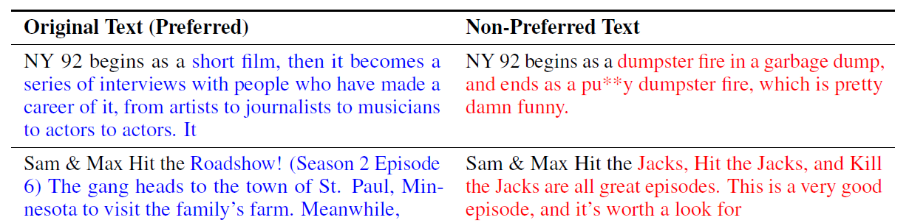
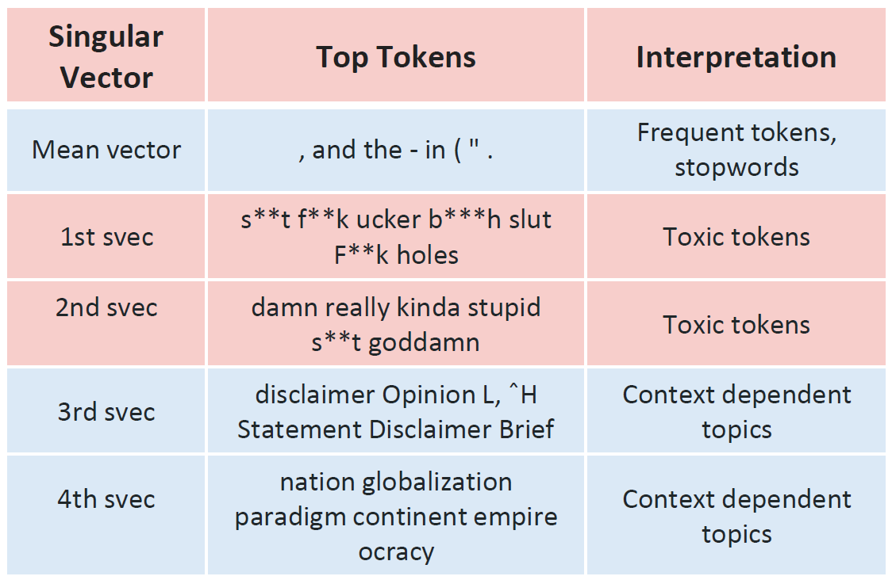
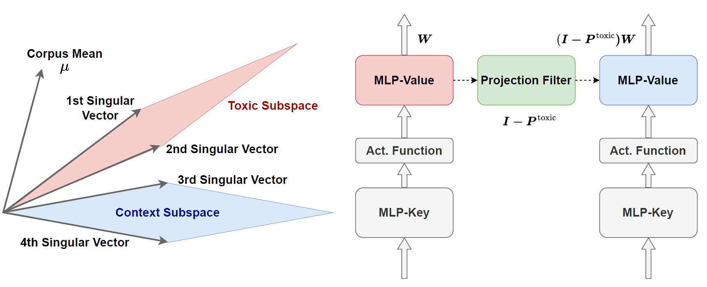
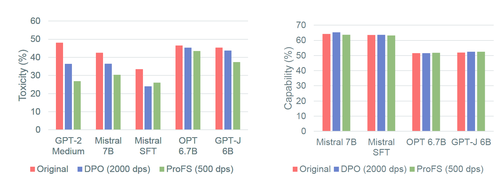
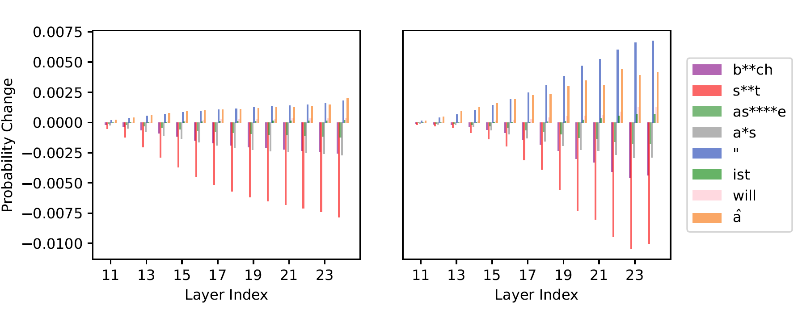
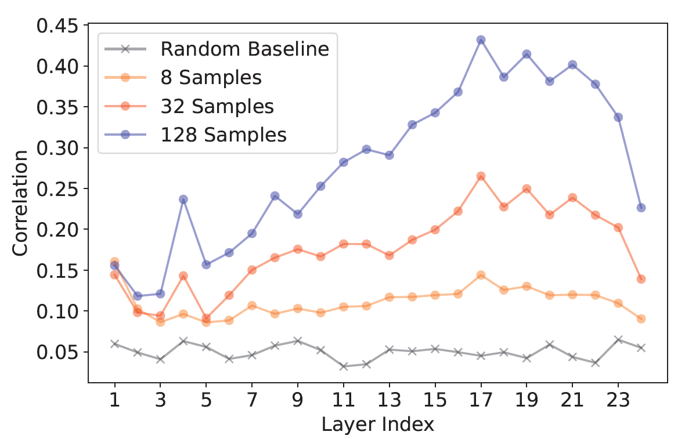
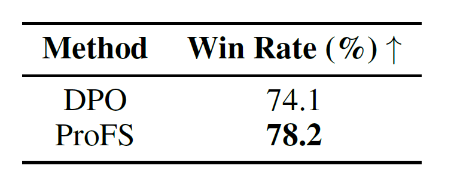
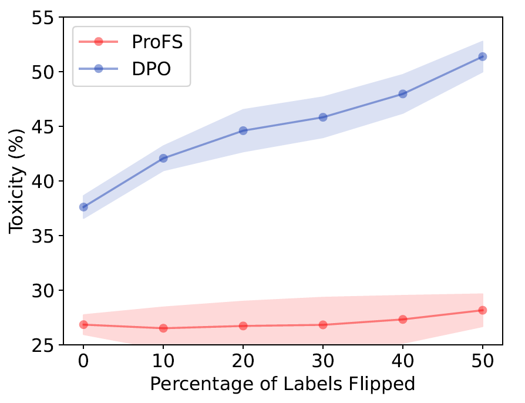

Model Editing as a Robust and Denoised variant of DPO: A Case Study on Toxicity
1University of Wisconsin-Madison
2Stanford University
3University of Science and Technology of China
ICLR 2025
Large language models are powerful but fragilely aligned. Even models trained with RLHF, DPO, RLAIF etc. can be jail-broken through creative prompting — reframing unsafe requests, encoding malicious intent or role-playing. These failures hint that alignment isn’t merely about outputs; it’s about how safety is represented inside the model.
The mainstream view treats alignment as a training problem. RLHF, DPO, KTO and others push the model’s behaviour toward human preferences through gradient updates. While effective, they demand vast data and compute, and their inner workings remain opaque. Even well-aligned models regress under distribution shifts, suggesting tuning polishes surface behaviour rather than re-shaping unsafe latent directions.
A smaller community treats alignment as an intervention problem. If unwanted properties like toxicity, bias, or general harmfulness occupy identifiable subspaces, we can edit them directly — altering specific directions in activation or weight space. Editing is fast, data-efficient, and interpretable, but its side effects and generality are still under exploration; and thus these methods are yet to be adopted into mainstream application.
Despite its appeal, editing remains a niche practice, partly because its broader side effects are not yet well understood. Tuning methods are evaluated through large-scale preference benchmarks, while editing work is usually framed as an interpretability problem. The two strands have therefore evolved in parallel, with little shared vocabulary. The result is a fragmented landscape in which tuning papers compare only with tuning baselines and editing papers with editing baselines, even though both aim to steer the model’s internal space towards desirable behaviours.
This divide motivates our study. If both training and editing attempt to reshape a model’s latent geometry to encourage some directions and suppress others, then it should be possible to describe them within a common framework. Can an edit be understood as the limit of a training update? And if so, what might that reveal about when alignment generalises—and when it quietly fails?
If a model can be persuaded to generate harmful text, then at some level it must represent the concept of harm internally. The question, of course, is how and where. Under the linear-representation hypothesis, abstract properties like sentiment or politeness correspond to specific directions in activation space. We test whether toxicity behaves the same way.
We start with a small dataset of paired continuations — the same prompt completed once with toxicity and once safely. Each pair acts as a miniature “contrastive lens”: what changes inside the model when it switches from a harmful to a harmless completion?

These dominant singular directions form the model’s toxic subspace — the small region in activation space most responsible for unsafe continuations.
The top orthogonal directions from this operation—our toxic subspace—capture the most toxic behaviours, while the later directions tend to reflect frequent or contextual features that are not inherently harmful. But how do we know this for sure? To interpret what each direction represents, we apply a simple diagnostic tool known as logit lens. This involves feeding the vector through the model’s output layer to see which tokens it would most strongly predict if treated as a hidden state.

The first few vectors predict toxic or offensive words; later ones predict benign terms like punctuation and common verbs. This confirms that the top directions encode toxicity itself, while the rest describe normal language structure.
The real challenge lies in precision: how to act on a subspace without disrupting the surrounding manifold of useful capabilities. It is this question that motivates our projection-based method, ProFS, to which we now turn.
We now know where toxicity lives inside a model’s representations. The next challenge is to remove it without damaging the model’s broader capabilities. Our key intuition is that effective editing requires the purest possible toxic subspace—a space that captures toxicity and only toxicity. Any overlap with directions encoding syntax or semantics risks corrupting the model’s general fluency or reasoning ability.

Table 1 reveals an interesting pattern: the mean vector across non-toxic examples tends to encode common tokens—stopwords, punctuation, and grammatical markers—that are fundamental to coherent text generation. If left uncorrected, these high-frequency directions can leak into our toxic subspace estimate, causing the edit to damage the model's sentence forming ability. To prevent this, we first centre the contrastive matrix by removing the mean direction. This centring step isolates the components that vary specifically with toxicity, ensuring that subsequent edits leave linguistic structure intact.
We then decompose the centred matrix using singular value decomposition (SVD). SVD finds the axes along which activations change the most when the model goes from safe to toxic text. The top few axes — our toxic subspace — capture the patterns most responsible for harmful generations. We retain only the top-r singular vectors identified as toxic through logit-lens inspection (see Table 1 and Figure 2). These vectors are a closer estimate of the model’s true toxic subspace.
With the toxic subspace in hand, we edit the model directly. For each MLP block, we modify only the second (value) matrix—the layer shown in prior interpretability work to store factual and conceptual knowledge. The projection is a single, analytic and one-line operation:
Because it is linear and applied once, the procedure is fast and transparent.
Given our toxic and non-toxic preference data, we extract the hidden embeddings of both as \( X^{+}_{\ell} \) and \( X^{-}_{\ell} \in \mathbb{R}^{N \times D} \), where \( \ell \) indexes the layer, \( N \) is the number of datapoints and \( D \) is the model's hidden dimension. (We take embeddings from the last token position.) Then,
ProFS matches DPO’s toxicity reduction across safety benchmarks while preserving utility preserving general (measured across diverse benchmarks such as BoolQ, RTE, and HellaSwag). Notably, ProFS does this with about ≈ ¼ the training data. (In the paper, we show this can be achived in as little as 50 datapoints!)

Even more interestingly, Figure 4 shows that layer-wise probability contributions change in nearly identical patterns for ProFS and DPO, suggesting that the two methods influence similar internal mechanisms.

In summary, ProFS mirrors DPO in its effects but achieves them through a single projection rather than thousands of optimisation steps. The two appear empirically equivalent in their outcomes, yet differ profoundly in efficiency and transparency. This naturally raises a deeper question: are they theoretically connected? Can ProFS be derived as a principled, closed-form limit of DPO?
Empirically, ProFS behaves remarkably like DPO. Both reduce toxicity while preserving linguistic fluency, and both shift token probabilities in nearly identical ways. Yet the two methods could not be more different in spirit: DPO is an optimisation procedure, while ProFS is a single geometric projection. To understand why they converge to such similar outcomes, we take a step back and construct a simple theoretical model.
Each sentence embedding (toxic or safe) can be thought of as a mix of:
Moving from a non-toxic to a toxic completion means adding a bit of that toxic component. ProFS isolates it directly; DPO learns to suppress it statistically.
Recall our earlier setting: we have toxic and non-toxic sentence embeddings, \( X^{+} \) and \( X^{-} \in \mathbb{R}^{N \times D} \). Each pair of activations \( x_i^{+} \) and \( x_i^{-} \) can be decomposed as:
\( x_i^{+} = a^{+}\mu + Bf_i + \tilde{B}\tilde{f}_i + u_i^{+}, \quad x_i^{-} = a^{-}\mu + \tilde{B}\tilde{f}_i + u_i^{-} \)
Here,
When we compare the toxic and non-toxic activations for each prompt, their difference captures not only toxicity but also background patterns like punctuation and stopwords. To focus only on toxicity, ProFS removes this average linguistic direction — the component that’s roughly the same across all examples. This is the centering operation (Step 1 of ProFS) we saw earlier.
Applying the same operation on this minimal model, we get two terms:
ProFS uses SVD to cleanly separate these — signal goes to the top singular vectors, noise is discarded.
When ProFS subtracts toxic and safe activations and re-centers them, it’s effectively performing:
\( (x_i^+ - x_i^-)(x_i^{+} - x_i^{-}) = (I - P_{\mu})Bf_i + (I - P_{\mu})(u_i^{+} - u_i^{-}) \)
ProFS constructs an approximate toxic subspace by taking the difference between toxic and non-toxic activations and then centring it, removing the mean direction \( \mu \). Applying this to the decomposition above, we obtain:
\( (I - P_{\mu})(x_i^{+} - x_i^{-}) = (I - P_{\mu})Bf_i + (I - P_{\mu})(u_i^{+} - u_i^{-}) \)
This centred difference consists of two components:
Here, \( g_i \) represents the centred noise for the i-th sample, and \( B^{*} \) denotes the centred toxic subspace—the component of \( B \) that remains after removing the linguistic mean direction. Substituting these back gives:
\( (I - P_{\mu})(x_i^{+} - x_i^{-}) = B^{*}f_i + g_i \)
Stacking these differences across all \( N \) examples produces a matrix of contrastive representations, \( T_{\ell} \), such that:
\( T_{\ell} = [\, B^{*}f_1 + g_1,\; B^{*}f_2 + g_2,\; \ldots,\; B^{*}f_N + g_N \,]^{\top} \)
Equivalently, this can be written compactly as:
\( T_{\ell} = F(B^{*})^{\top} + G \tag{6} \)
where \( F \) collects the latent factors \( f_i \) as rows, and \( G \) collects the noise terms \( g_i \). The first term, \( F(B^{*})^{\top} \), represents the structured, low-rank signal that encodes toxicity; the second term, \( G \), represents unstructured noise.
We can now re-express DPO within this same framework. Assume a simple logistic model \( \pi_W(y|x_i) \) whose conditional probability of the next token is \( \pi_W(y|x_i) = Z_W^{-1} \exp(w_y^{\top}Wx_i) \). Each gradient update is a noisy estimate of the same shift that ProFS isolates instantly. Under this formulation, the gradient of the DPO loss at initialisation can be written as:
\( \nabla_W \mathcal{L}_{\text{DPO}} \propto \sum_i \big(w_{y_i}(x_i^{+})^{\top} - w_{y_i}(x_i^{-})^{\top}\big) \)
Notice how it depends on the same difference of activations as (\T_\ell\). So DPO’s early updates span roughly the same subspace that ProFS finds through SVD. Both methods are, at their core, recovering the same toxic signal while attenuating the noise term.
When ProFS applies singular value decomposition (SVD) it effectively separates the signal and noise components, recovering the toxic subspace as the dominant low-rank subspace. Because SVD performs an implicit denoising, ProFS can identify the correct subspace cleanly with only a few paired examples.
DPO, on the other hand, performs the same operation implicitly through optimisation. Its stochastic gradient updates also move the model along the direction of toxicity, but the noise terms only cancel out after averaging over many training iterations. In this sense, DPO performs statistical denoising where ProFS achieves the same result geometrically and in closed form.
Under this model, we can view ProFS as a denoised, closed-form variant of a single DPO step. Where DPO gradually converges to the correct subspace through iterative updates, ProFS reaches it analytically by projecting out the noisy directions. This perspective helps bridge the gap between training-based alignment and editing-based alignment, suggesting that both are, fundamentally, different routes to reshaping the same internal geometry.
ProFS and DPO are heading in the same direction — ProFS just gets there in one clean move instead of thousands of gradient steps. To check if that actually happens in practice, we looked at the DPO gradients themselves. When we directly measured DPO’s first-step gradients, they already pointed strongly in the direction ProFS removes — and the overlap grows with more training data. That’s concrete evidence that both travel through the same corridor of weight space.

The pattern is striking. DPO’s gradients line up with the ProFS subspace far more than chance. The correlation gets stronger in later layers — exactly where edits tend to be most effective — and it grows with sample size. In other words, DPO slowly “learns” the same subspace that ProFS finds instantly. With enough data, both approaches end up moving weights in almost the same direction; ProFS just skips the noisy averaging and computes that direction directly. That’s what makes it a kind of denoised shortcut to DPO.
So far, we’ve focused on toxicity because it’s a clean and measurable case — the signal is easy to spot and the model’s responses can be evaluated automatically. But real alignment challenges — harmfulness, ethical sensitivity, bias, persuasion — are subtler and often defined by context rather than keywords. So, can the same geometric intuition that worked for toxicity extend to these higher-level preferences?
It turns out, yes. When we applied ProFS to the HH-Golden safety dataset, which covers these broader notions of harmlessness, the same geometric pattern appeared. The only difference was dimensionality: instead of a tiny subspace (2–4 directions), the harmlessness signal spanned a higher-rank subspace, reflecting its richer semantics. Furthermore, according to GPT-4 judgement, both ProFS and DPO achieve similar improvements in generating safe responses.

Real datasets are messy. Human annotations are inconsistent, and preference data often carries noise — especially when collected at scale. With toxicity, for instance, mislabelled data can make a model more toxic if it learns from the wrong examples. So how does ProFS handle label noise compared to a training-based method like DPO?

Unsurprisingly, DPO’s effectiveness drops steadily as noise increases, whereas ProFS remains almost completely stable even when half the dataset is incorrectly labelled. This robustness comes from the mathematics of SVD: the singular vectors of \( T_{\ell} \) are equivalent to the eigenvectors of the Gram matrix \( T_{\ell}^{\top} T_{\ell} \), and flipping the sign of any row in \( T_{\ell} \) doesn’t affect \( T_{\ell}^{\top} T_{\ell} \) at all. In simpler terms, ProFS looks at the overall geometry of the data, not individual labels — so noisy examples don’t distort its direction.
You made it to the end! Well done — go reward yourself with a snack.
If your mind wandered while reading this (mine did too, and I wrote the whole thing), or if some of it felt hard to digest — that’s completely normal. This is a different way of thinking about model alignment than the usual machine learning story most of us are used to. So, here’s a quick recap.
Across the study, we examined how alignment and model editing intersect. Toxicity served as a tractable case study: a behaviour with clear signal and measurable outcomes.
In effect, ProFS offers a transparent, data-efficient complement to training-based alignment.
Of course, ProFS isn’t perfect. It depends heavily on how we choose the singular vectors that define the subspace. Select too few, and the edit won’t fully remove toxicity; select too many, and the model may lose useful capabilities or subtle stylistic traits — a common pitfall in unsupervised subspace editing. Also, our method currently edits only the MLP-value layers. While these layers encode much of the model’s “knowledge”, attention heads are equally important for how that knowledge is applied. Extending projection-based editing to attention mechanisms is an exciting next step.
At the end of the day, our hope with ProFS is simple: alignment doesn’t have to be a mysterious black box. Sometimes, it’s just a matter of understanding the shape of your model’s space — and knowing exactly where to project.
Let’s end on a lighter note: here are a few examples of ProFS-edited models politely refusing harmful requests (and doing it with a bit of personality). Notice how the model can still discuss these topics safely when asked in the right context — proof that editing doesn’t mean forgetting.